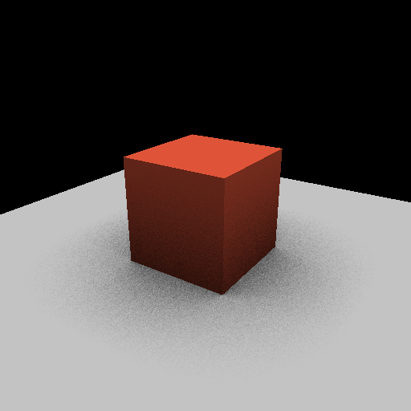
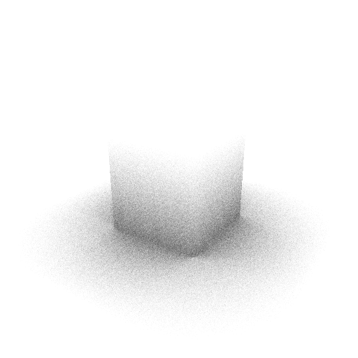
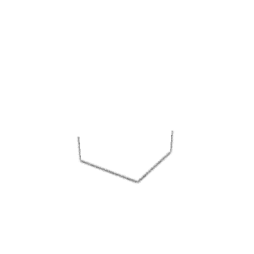
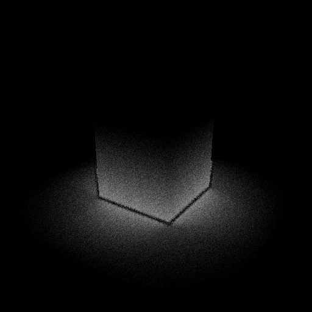
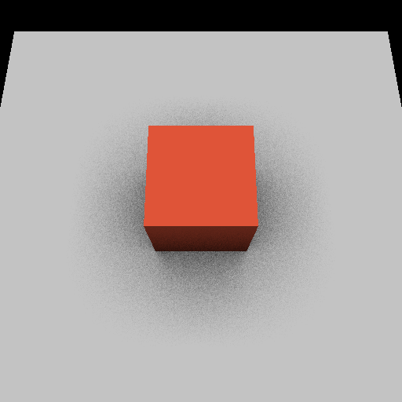
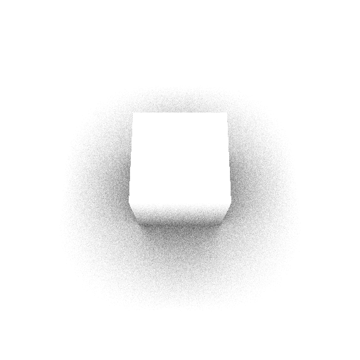
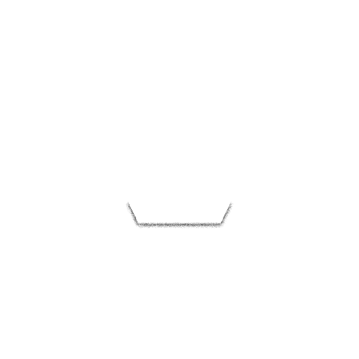
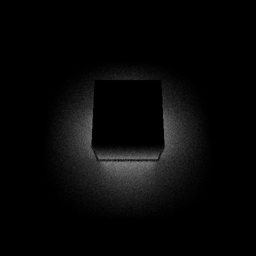

Run it now.
Download the binary for your system from the 0.2.0 release, check it against the published hashes, and point it at an empty folder. A 256 by 256 frame takes about a second.
# check the download, then render the default view sha256sum -c SHA256SUMS raw_native_cli --out ./out # move the camera; a previous camera adds motion vectors raw_native_cli --out ./out --width 512 --height 512 --eye 0,9,3 --target 0,0.5,0 raw_native_cli --out ./out --prev-eye 4.3,4,5.7 # or build it: CMake 3.24+ and any C++23 compiler cmake -S . -B build -DCMAKE_BUILD_TYPE=Release cmake --build build --config Release ctest --test-dir build -C Release --output-on-failure
Two views of one scene, and what each certificate says.
Every image here came out of the 0.2.0 command line at 512 by 512. The scene is a box on a ground plane under one light. The first panel is the shaded frame. The next two are the reference and the shortcut, where white means open sky and dark means occluded. The last is the error between them.




{"claim":"screen-space AO matches ray-traced ground truth within tolerance",
"verdict":"refuted", "oracle":"raw-rt-ao-v1",
"evidence":[["pixels","151984"],["rmse","0.1349"],["maxError","0.6406"],["tolerance","0.1200"]],
"channels":{"ao_fidelity":0.881125,"motion_coherence":1,"hdr_headroom":0.875542}}
The shortcut misses the soft halo almost entirely. Its error is 0.135 RMSE against a tolerance of 0.12, so the certificate says refuted. That is the check working: a picture that looks fine at a glance came back with a measured reason not to trust its shading.




{"claim":"screen-space AO matches ray-traced ground truth within tolerance",
"verdict":"verified", "oracle":"raw-rt-ao-v1",
"evidence":[["pixels","239854"],["rmse","0.0827"],["maxError","0.6250"],["tolerance","0.1200"]],
"channels":{"ao_fidelity":0.923585,"motion_coherence":1,"hdr_headroom":0.875542}}
From above, most covered pixels are open ground where both methods agree, so the average error drops to 0.083 and the same check passes. The worst pixel is still off by 0.63. The certificate carries both numbers, so you can see that a pass on the average does not mean every pixel is right. Raw certificates: default, high.
What the certificate is for.
A rendered frame usually asks you to trust it. A certificate gives you a claim, a verdict, the oracle that judged it and the evidence the verdict rests on. The verdict is one of three words: verified, refuted or unverifiable. A channel with no data is written as null, never as a pass.
You check one by running the same command yourself. The output is deterministic: the default frame and its certificate hash the same with MSVC 19.50 on Windows (Release and Debug) and with GCC 13.3 on Ubuntu, on my machine and on GitHub’s build runners. Memory gets the same treatment. The renderer measures exactly how many bytes the frame needs, renders again inside that budget, and refuses any allocation past it. A second certificate records whether the budget held.
The same scene gives different verdicts from different cameras:
| View | Camera flags | Covered pixels | RMSE | Verdict |
|---|---|---|---|---|
| Default | none | 151,984 | 0.1349 | refuted |
| High | --eye 0,9,3 --target 0,0.5,0 | 239,854 | 0.0827 | verified |
| Low | --eye 6,1.5,2 --target 0,1,0 | 140,838 | 0.1659 | refuted |
| Close | --eye 2,2.5,3 --target 0,0.8,0 --fovy 0.7 | 214,043 | 0.2167 | refuted |
| Wide | --eye 5,5,8 --target 0,0.5,0 --fovy 1.2 | 88,869 | 0.0882 | verified |
512 by 512, tolerance 0.12 RMSE. Each row is one run of the 0.2.0 binary with the flags shown.
Where it stands.
- There is one built-in test scene and no model loader yet.
- The ray-traced reference uses 64 samples per pixel from a fixed per-pixel hash. It is a repeatable estimate and shows visible grain.
- The screen-space method is a simple one, which is why most views come back refuted.
- The tolerance is fixed at 0.12 RMSE in the command line.
- Rendering is single-threaded: about 1.2 seconds at 256 by 256 and 4.6 seconds at 512 by 512 on an Intel Core i7-13700KF, measured while the machine was busy with other work.
- Matching hashes were checked on x86-64 with two compilers. Other processors and compilers are untested.
- It does not run in the browser yet. A WebAssembly build is the next step for this page.
Where it came from.
RAW began as a Direct3D 11 effects platform for Skyrim SE: a proxy library that took over a closed game’s frame and added its own lighting passes mid-picture. That taught me how a frame is built and how quickly an effect can look right while being wrong. The new RAW keeps the lesson and drops the game. It owns its whole frame, and every frame carries a check against a reference. The Skyrim code stays public as archived history.
Read the source.
C++23, MIT licensed, built from the standard library and its own headers. The rasterizer, both ambient occlusion methods, the reconcile step, the certificate writer and the bounded memory arena each have their own tests, 29 in all.